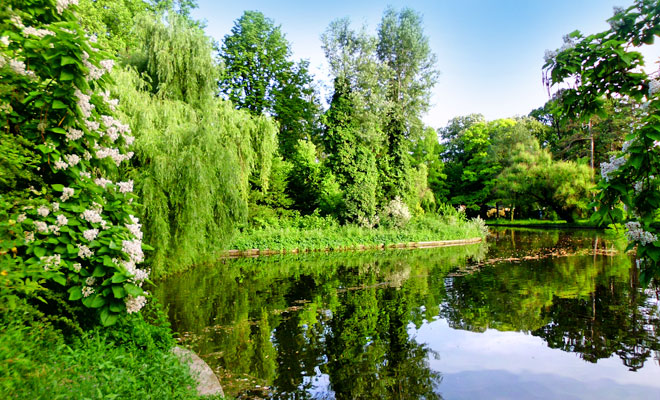

Salina Praid din comuna Praid, judetul Harghita
Situata la 10 km de statiunea Sovata in judetul Harghita, Salina Praid este una dintre cele mai mari mine de sare din tara si Europa, exploatarea ei constituind de sute de ani sursa de venit pentru localnici, multi dintre ei lucrand acum in salina. Cu o forma eliptica, zacamântul are diametre de 1,2-1,4 km si o adancime de 2.700 metri, cu rezerve de aproape 500 de ani, o adevarata comoara pentru economia Transilvaniei. In inima muntelui de sare se ajunge cu autobuzul, printr-un tunel lung de 1.500 de metri, apoi accesul in salina se face coborand 300 de trepte abrupte iar in fata ochilor apare un adevarat orasel subteran, la 120 de metri adancime. Aerul este puternic ionizat, deosebit de eficient in tratarea afectiunilor respiratorii. Tratamentele se fac sub supravegherea unei echipe medicale care mai sustine programe de gimnastica si respiratie alese pentru fiecare boala in parte.
Salina Ocna Sibiului din orasul Ocna Sibiului, judetul Sibiu
Zacamantul de sare a fost exploatat inca din timpul romanilor, continua exploatare ducand la formarea unor mari caverne subterane, care, prin prabusirea lor, au format lacuri precum: Horea, Closca, Crisan, Lacul fara fund, Avram Iancu, Ocnita, Sf. Ion, Brancoveanu, Sf. Ignat, Austel. In epoca romana, modul de exploatare a sarii a avut un caracter sezonier, implicand asigurarea nevoilor generale ale statului pe durata unui intreg an calendaristic. Prin sarea sa, Dacia era cel putin tot atat de importanta Imperiului Roman, cat pentru resursele ei de aur. Romanii lucrau numai la suprafata, in gropi patrulatere, pana la o adancime de 12-15 m, de unde sarea se putea scoate usor pe punti alunecoase si cu aparate simple de ridicat, dupa care o paraseau si incepeau alta. In anul 1896, la Ocna Sibiului era deschisa o singura ocna de sare, deservita de un crivac de suprafata, actionat de 8 cai.

Salina Cacica din comuna Cacica, judetul Suceava
Salina Cacica se afla situata la numai 9 kilometri distanta de Solca, pe DJ 209, in judetul Suceava. Salina de la Cacica reprezinta un obiectiv turistic de maxima importanta pentru regiune intrucat aici a fost descoperita una dintre cele mai vechi exploatari de sare recristalizata din saramura din Europa. Salina de la Cacica este vizitata zilnic de sute de turisti veniti aici pentru a observa salina veche. Ne putem plimba la biserica creata in interiorul sau, dar si la salile de festivitati si lacul pe care te poti plimba linistit pana si cu barca. Salina de la Cacica se afla in proprietatea exclusive a statului. Istoria salinei ne arata ca pana la sfarsitul primului razboi mondial, Salina de la Cacica a fost exploatata de catre imperiul Austro-Ungar. Salina de la Cacica se afla intr-o zona destul de cunoscuta, in apropiere de orasul Gura Humorului, fiind principalul punct de atractie pentru locuitorii din regiune, dar si pentru turistii ajunsi in aceste locuri.
Salina Turda din orasul Turda, judetul Cluj
>Dovada harniciei oamenilor din Potaissa sta înca vie atunci cândpa?e?ti pe culoarele întinse ale Salinei din Turda, unul dintre cel mai vizitate locuri din ?ara, un muzeu al mineritului nemaiîntâlnit, dar ?i loc fascinant care întotdeauna te îndeamna sa revii. Sute de ani de munca manuala, mii de oameni introdu?i în subterane pentru a scoate buca?i de sare, valoroase pe-atunci, care ajungeau sa le asigure bucatele de peste zi. Mii de cai chinui?i care ?edeau în mine ore întregi, vedeau lumina rar, iar atunci când pa?eau din subteran vedeau înce?o?at, greu, pâna ce viitorul lor ramânea în întuneric. Odata patruns în interior observi buca?i de sare, mai alba, mai închisa, remarci forme ?i fâ?ii bine conturate. Vezi locul pu?ului de extrac?ie, te afli acolo unde minerii î?i rosteau rugaciunea, dar ?i în locul în care coborau cu to?ii în subteran, po?i observa urmele stramo?ilor no?tri în a?a-zisa „camara de sare”. Sta ascunsa în subteran, pre?uita astazi de noi to?i, creând un spa?iu în care te po?i recrea ?i în care te po?i sim?i mai bine. De?i demult uitata ori folosita ca depozit de brânzeturi, salina a ajuns astazi sa fie vizitata de milioane de straini ?i români, deopotriva, rasplatind parca mâinile batatorite ale minerilor.
Salina Drumul Sarii din ora?ul Târgu Ocna, jude?ul Bacau
Targu Ocna este orasul care ascunde de secole, în adancuri, un alt oras: orasul alb, de sare. Situata in inima Moldovei, pe pitoreasca vale a Trotusului, in perimetrul orasului Targu Ocna din judetul Bacau, Salina Drumul Sarii este un loc inedit, unde poti lua o gura de sanatate. Imensitatea golurilor, adevarate catedrale sapate in sare, si labirintul galeriilor iti creeaza impresia unui oras scufundat in adancuri si redescoperit pentru a fi din nou daruit.
Revin-o la Pagina Principala